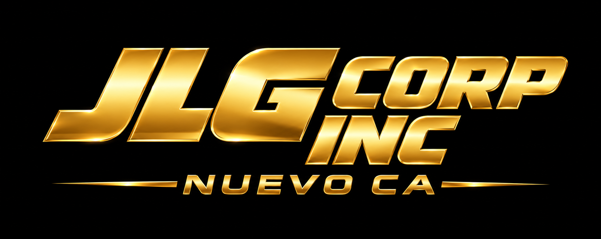
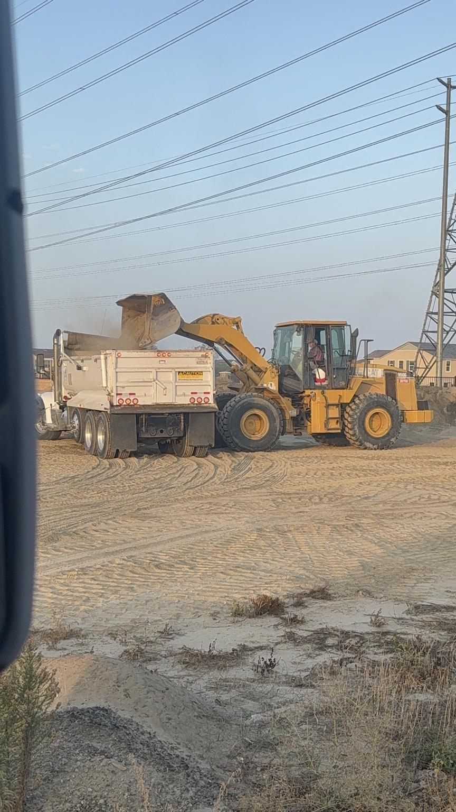
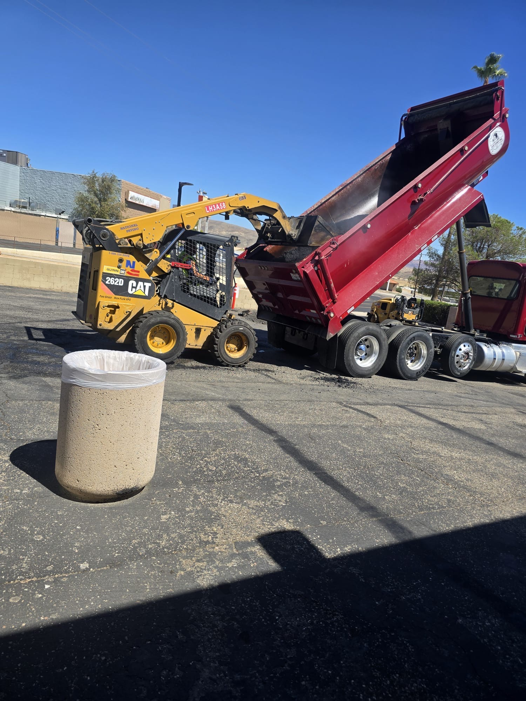
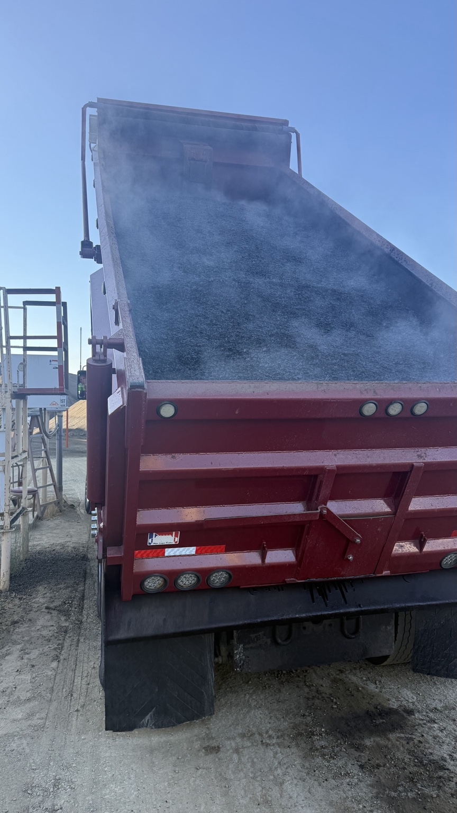
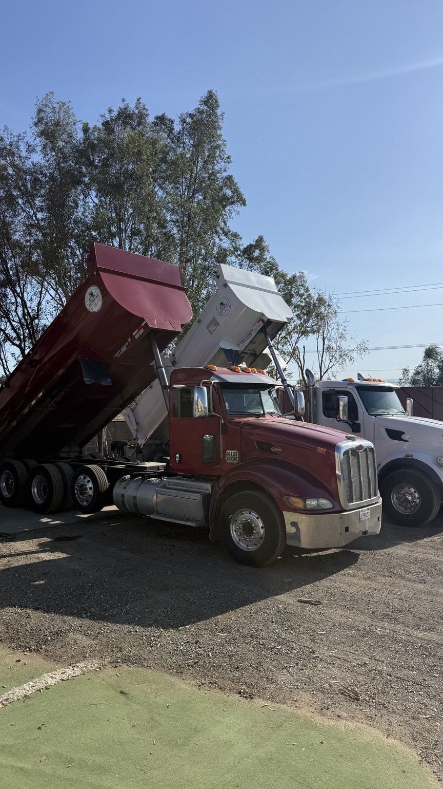

Reliable hauling for contractors, paving crews, grading companies and construction projects throughout Southern California.
CALL (951) 503-3286REQUEST A QUOTEJLG Corp Inc supports construction and material-hauling projects with a fleet of Super 10 dump trucks. Contact us with your job details and truck requirements.
Dirt, sand, rock, base and other approved construction materials.
Hot asphalt, grindings and hauling support for paving projects.
Demo material and other approved loads for construction and site work.
Our trucks are available for contractor and construction hauling throughout our Southern California service area.




Based in Nuevo, California, JLG Corp Inc provides hauling services across Southern California, including the Inland Empire and Orange County. Contact us with the job location to confirm availability.
Tell us where the job is, what you're hauling, and how many trucks you need.
Please note: Wetbatch hauling is not available.